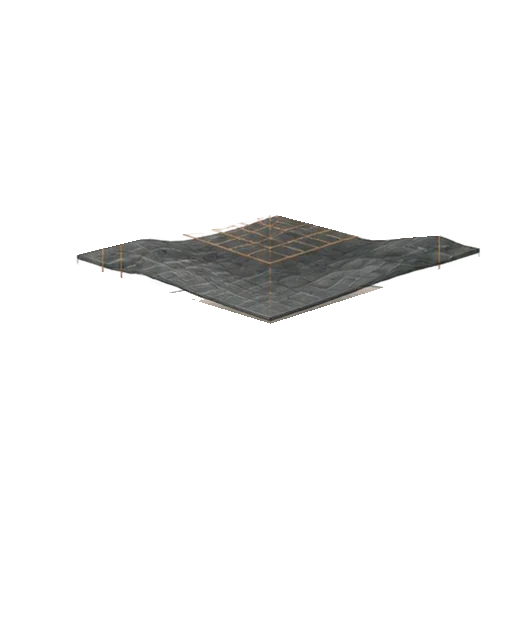
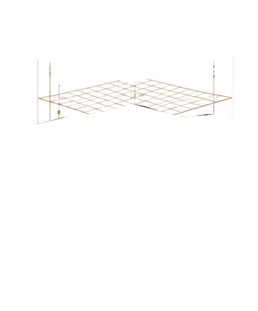
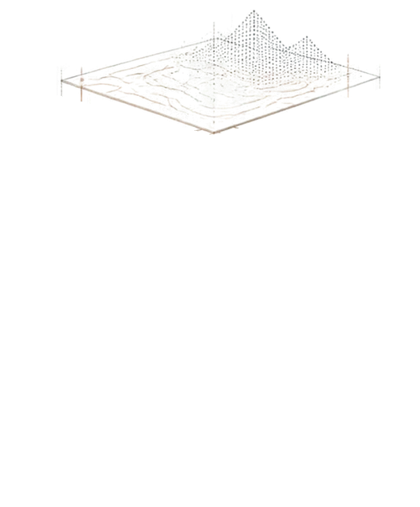
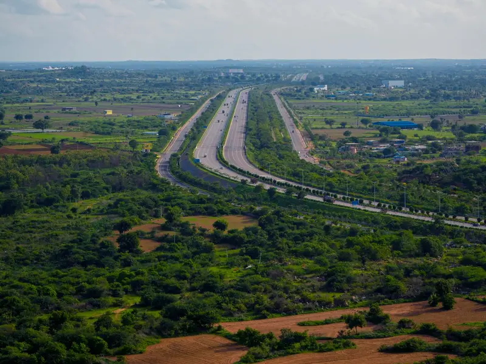
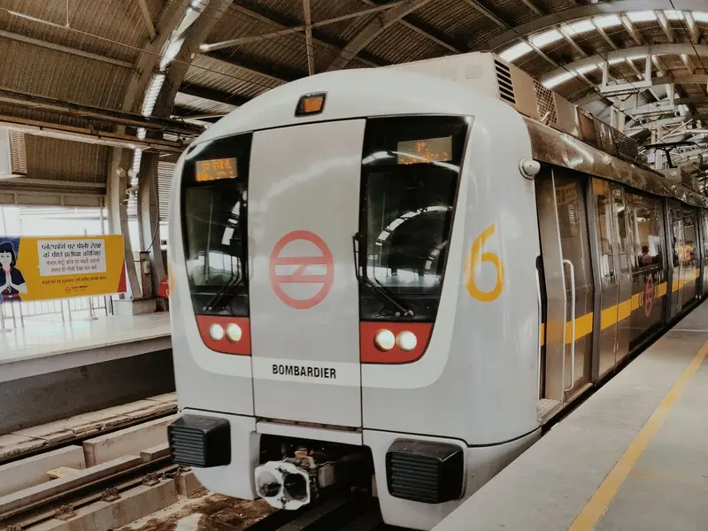
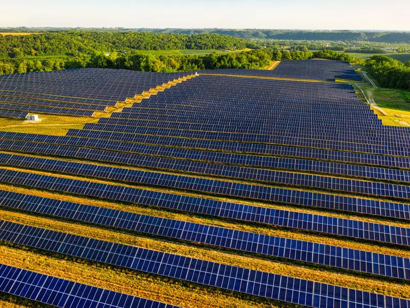
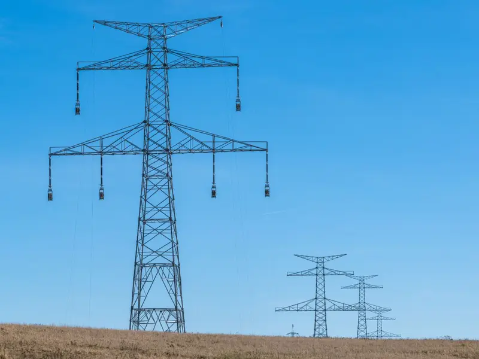
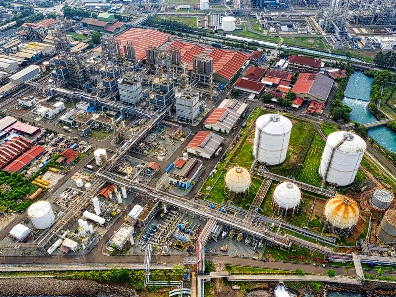
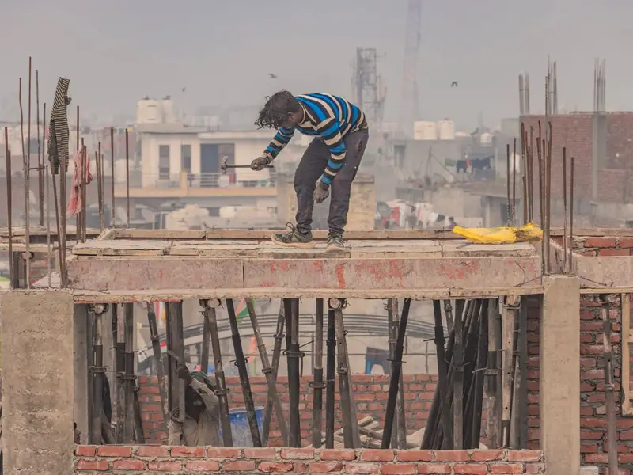

Understand & Define
Project objectives, technical requirements and deliverables.
Ground intelligence, testing and engineering design for infrastructure and development projects.
 Foundations
Foundations
 Natural soil strata
Rock surface
Natural soil strata
Rock surface

Filled-up soil
Investigation grid
Survey & topography



Highways & RoadsSubgrade and pavement testing, road geometric and pavement design, corridor surveys.
Rail & MetroGround investigation along alignments, pile testing and structural condition assessment.
Renewable EnergySite suitability, ground resistivity surveys and foundation design for solar and wind sites.
Power & UtilitiesUnderground utility detection and foundation design and testing for substations and lines.
Industrial & ManufacturingBearing capacity analysis, plate load tests and structural design for plant foundations.
Buildings & Real EstateSoil investigation, structural design, BIM coordination and technical due diligence.A structured approach to understanding requirements, executing technical work and delivering clear outputs.
See how we work →Project objectives, technical requirements and deliverables.
Scope, resources, methods, timelines and interfaces.
Depending on scope, a project may use one stream or both, and they share information throughout.
Geotechnical investigation, geophysics, laboratory testing, NDT and foundation testing.
Engineering analysis, design development, BIM and digital coordination.
Technical checks, interpretation, coordination and quality review, bringing both streams together.
Agreed reports, designs, models and technical deliverables.
PETALS Engineering Consultancy is an India-based engineering consultancy bringing together technical knowledge, engineering analysis and practical project understanding.
We are committed to delivering technically sound work through careful planning, reliable data, responsible engineering judgement and transparent communication.
Scoping every investigation and design around the project's real requirements.
Field and laboratory work carried out to agreed methods and timelines.
Reliable data from field investigation, laboratory and non-destructive testing.
Sound engineering interpretation that turns data into clear recommendations.
Ownership of technical decisions, and a team coordinated through delivery.
Long-term client relationships built on clear communication and dependable delivery.
Share your requirements with PETALS Engineering Consultancy.